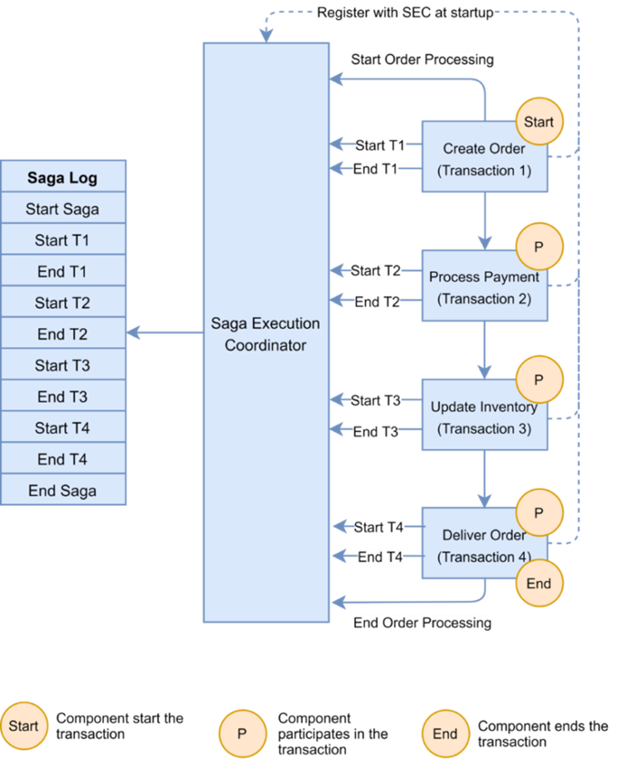
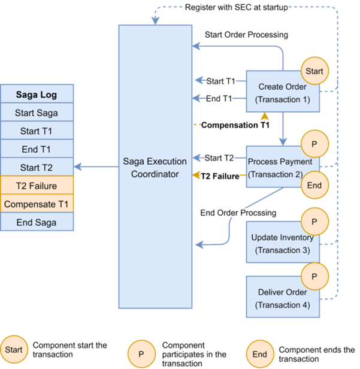
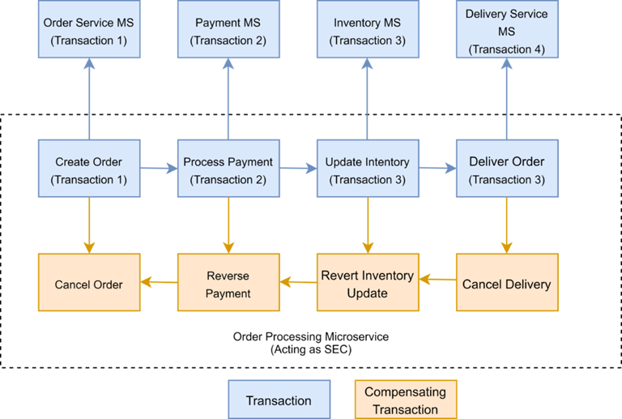

What is the Saga Pattern?
A Saga pattern is a design pattern used to manage and maintain data consistency across multiple microservices. It involves a series of local transactions, where each transaction updates a database and triggers the next transaction by publishing a message or event. If a transaction fails, the saga executes a series of compensating transactions to undo the changes made by previous transactions.
Why It Was Introduced
- Managing Distributed Transactions: Traditional distributed transactions (using two-phase commit) are often challenging and inefficient for microservices architectures.
- Handling Failures: Provides a way to manage failures and rollbacks in distributed systems without requiring a centralized transaction manager.
- Scalability: Allows for better scalability by breaking down transactions into smaller, more manageable steps.
- Resilience: Enhances the resilience of the system by ensuring that partial failures can be handled gracefully.
Why Use the Saga Pattern?
- Transactions Spanning Multiple Microservices: Essential for multi-service operations like order processing or booking systems.
- Long-Running Transactions: Ideal for operations that take time to complete, like user registration with email verification.
- Need for Resilience and Fault Tolerance: Crucial in systems where failures are expected and data consistency is paramount.
1. Choreography-Based Saga (decentralized coordination)
In this approach, there is no central orchestrator. Each service participating in the Saga performs their transaction and publish events. The other services act upon those events and perform their transactions. Also, they may or not publish other events based on the situation.
2. Orchestration-Based Saga (centralized control)
In this approach, there is a Saga orchestrator that manages all the transactions and directs the participant services to execute local transactions based on events. This orchestrator can also be thought of as a Saga Manager.
1. Implementing Saga Choreography Pattern
In the Saga, choreography flow is successful if all the microservices complete their local transaction, and none of the microservices reported any failure.
The following diagram demonstrates the successful Saga flow for the online order processing application:
In the event of a failure, the microservice reports the failure to SEC, and it is the SEC's responsibility to invoke the relevant compensation transactions:
2. Implementing Saga Orchestration Pattern
In the Orchestration pattern, a single orchestrator is responsible for managing the overall transaction status. If any of the microservices encounter a failure, the orchestrator is responsible for invoking the necessary compensating transactions:
The main benefit of the Saga Pattern is that it helps maintain data consistency across multiple services without tight coupling. This is an extremely important aspect for a microservices architecture.
However, the main disadvantage of the Saga Pattern is the apparent complexity from a programming point of view. Also, developers are not as well accustomed to writing Sagas as traditional transactions. The other challenge is that compensating transactions also have to be designed to make Sagas work.
In my opinion, Sagas can help solve certain challenges and scenarios. They should be adopted or explored if the need arises. However, I would love to hear if others have also used Saga Pattern and how was the experience? What frameworks (if any) did you use?
| Advantage of SAGA Pattern | Disadvantage of SAGA Pattern |
|---|---|
| Provides better fault tolerance: With SAGA, if one step fails, the entire process can be rolled back or compensated without affecting other steps. | Increased complexity: Implementing SAGA requires additional coding and architecture to handle compensation and rollback steps. |
| Simplifies error handling: SAGA provides a clear and standardized way to handle errors and compensations, making it easier to debug and maintain. | Limited support: Not all frameworks or platforms support SAGA out of the box, which can make implementation more difficult. |
| Allows for asynchronous processing: SAGA can support asynchronous processing, allowing for greater concurrency and performance. | Requires careful design: The SAGA pattern requires careful design to ensure that the compensations and rollbacks are implemented correctly and can handle all possible failure scenarios. |
| Supports distributed transactions: SAGA can handle transactions across multiple services or databases, allowing for more scalable and distributed architectures. | Increased latency: SAGA may result in additional latency due to the need to coordinate between different services or databases. |